The 110 species
Every sundew the identifier knows, grouped by section. Each page has photos, where the species was first described, and how well the identifier recognises it.
Sections: Arachnopus · Arcturia · Brasiliae · Bryastrum · Coelophylla · Drosera · Ergaleium · Erythrorhiza · Lasiocephala · Luniferae · Macrantha · Phycopsis · Psychophila · Ptycnostigma · Stolonifera · Thelocalyx
Section Arachnopus subgenus Drosera · 4 species

Section Arcturia subgenus Drosera · 2 species
Section Brasiliae subgenus Drosera · 3 species

Section Bryastrum subgenus Drosera · 14 species
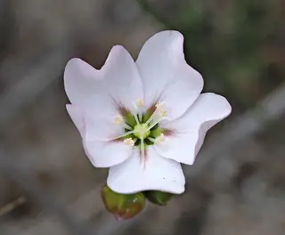
Drosera androsacea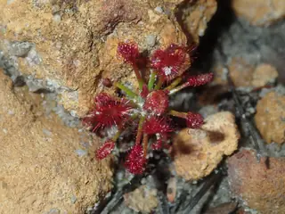
Drosera barbigera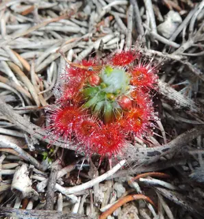
Drosera eneabba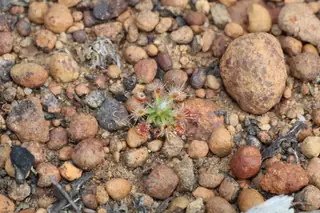
Drosera hyperostigma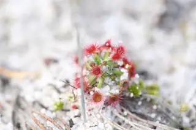
Drosera micrantha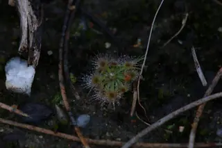
Drosera miniata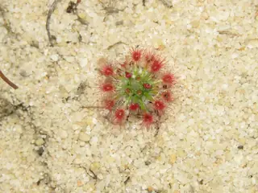
Drosera minutiflora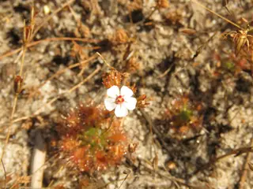
Drosera nitidula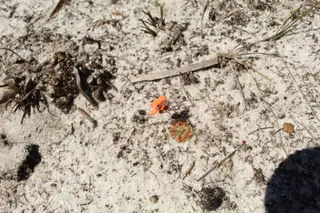
Drosera platystigma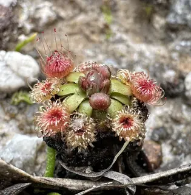
Drosera pulchellaPretty Sundew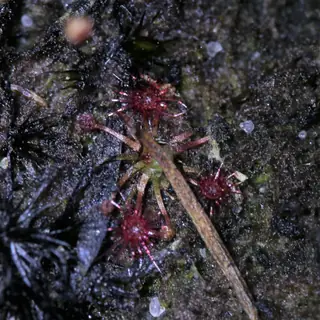
Drosera pygmaeapygmy sundew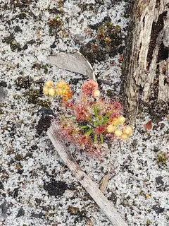
Drosera roseana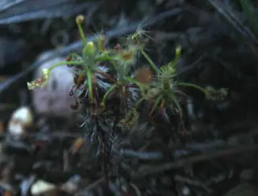
Drosera scorpioidesshaggy sundew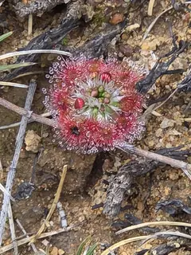
Drosera spilos
Section Coelophylla subgenus Drosera · 1 species
Section Drosera subgenus Drosera · 13 species
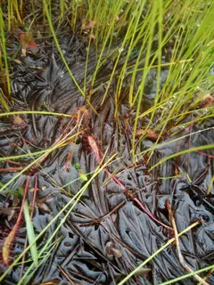
Drosera anglicaGreat Sundew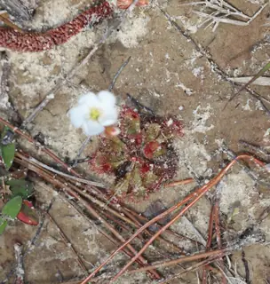
Drosera brevifoliadwarf sundew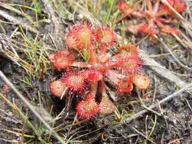
Drosera capillarisPink Sundew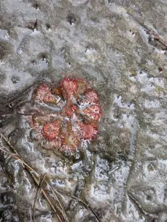
Drosera cayennensis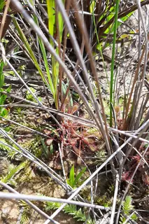
Drosera communis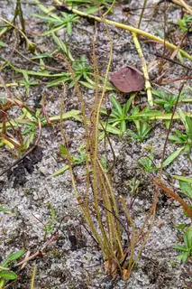
Drosera filiformisThread-leaved Sundew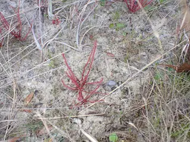
Drosera floridanaFlorida Threadleaf Sundew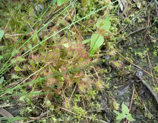
Drosera intermediaspoonleaf sundew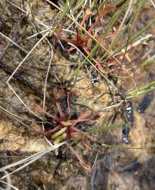
Drosera linearisSlenderleaf Sundew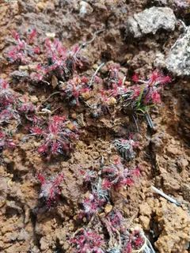
Drosera neocaledonica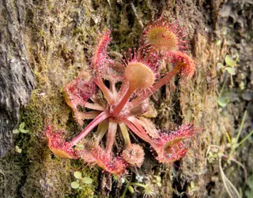
Drosera rotundifoliaround-leaved sundew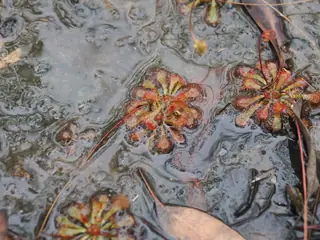
Drosera spatulataRosy Sundew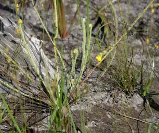
Drosera tracyiTracy's sundew
Section Ergaleium subgenus Ergaleium · 7 species
Section Erythrorhiza subgenus Ergaleium · 13 species
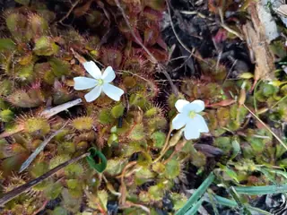
Drosera aberransscented sundew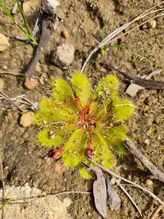
Drosera bulbosared-leaved sundew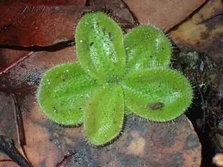
Drosera collina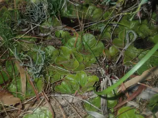
Drosera erythrorhizared ink sundew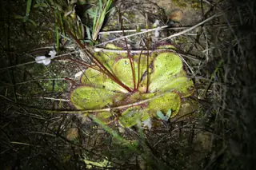
Drosera macrophylla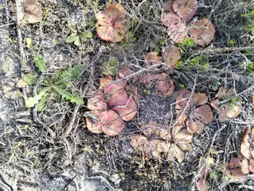
Drosera magna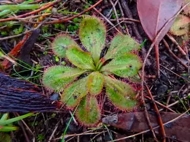
Drosera praefoliaearly sundew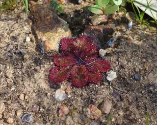
Drosera rosulata- Drosera schmutziiSchmutz's sundew
- Drosera squamosa
- Drosera tubaestylis
- Drosera whittakeriWhittaker's sundew
- Drosera zonariaPainted Sundew
Section Lasiocephala subgenus Drosera · 5 species

Section Luniferae subgenus Ergaleium · 5 species
Section Macrantha subgenus Ergaleium · 9 species
Section Phycopsis subgenus Drosera · 1 species
Section Psychophila subgenus Drosera · 2 species
Section Ptycnostigma subgenus Drosera · 22 species
- Drosera admirabilisFloating Sundew
- Drosera albaWhite Sundew
- Drosera aliciaeAlice Sundew
- Drosera burkeanaBurks Sundew
- Drosera capensisCape Sundew
- Drosera cistifloraPoppy-flowered Sundew
- Drosera collinsiaeCollins Sundew
- Drosera cuneifoliaPeninsula Sundew
 Drosera dielsianaDiels Sundew
Drosera dielsianaDiels Sundew- Drosera ericgreeniiErics Sundew
- Drosera esterhuyseniaeElsies Sundew
- Drosera glabripesSpoon Sundew
- Drosera hilarisSprawling Sundew
- Drosera madagascariensisMadagascar Sundew
- Drosera natalensisNatal Sundew
- Drosera paucifloraFewflower Sundew
- Drosera ramentaceaBranching Sundew
- Drosera slackiiGuitar Sundew
- Drosera trinerviaSmall Sundew
- Drosera venustaGarden Route Sundew
- Drosera xerophilaDryland Sundew
- Drosera zeyheriPale Roseflower Sundew
Section Stolonifera subgenus Ergaleium · 7 species
Section Thelocalyx subgenus Drosera · 2 species
Photos by iNaturalist observers; each is credited on its species page.